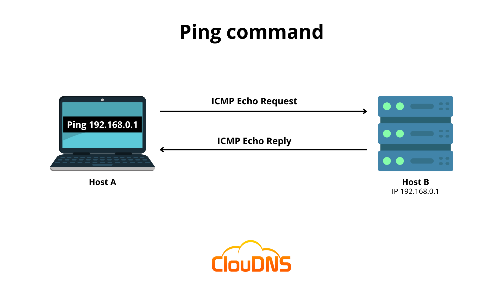
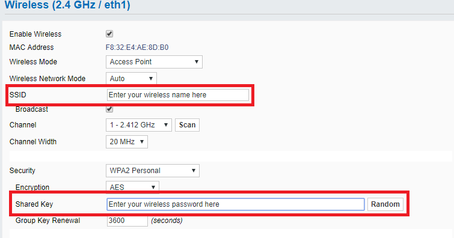
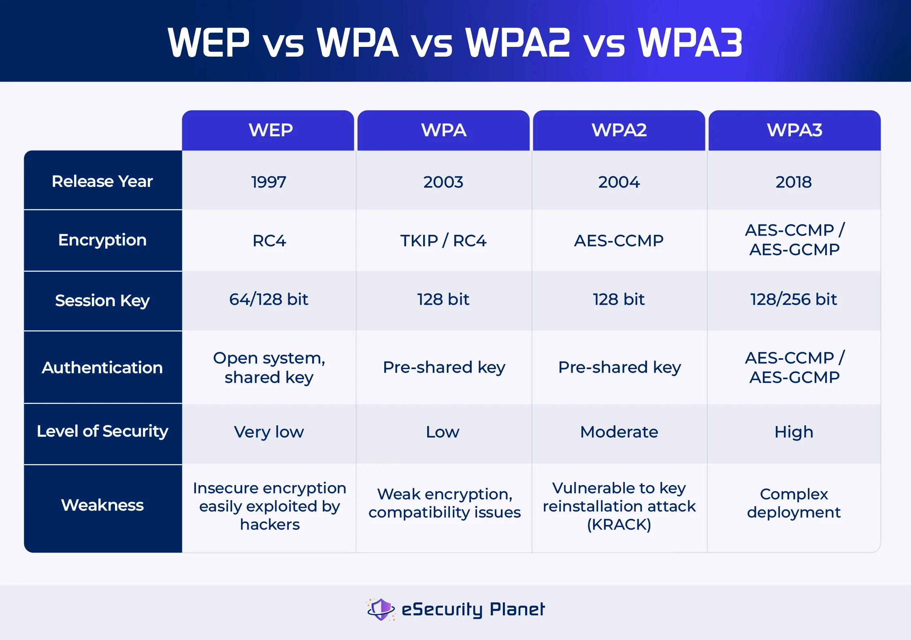

🖥️ 1️⃣ Network Setup & Checks on Computers
Network setup and checks are extremely important for troubleshooting, labs, and exams such as CCST and basic networking. This section starts with Windows and then maps the same concepts to Linux and macOS.
🪟 A) Windows
🔹 How to Check Network Connection (GUI Method)
- Open Settings
- Go to Network & Internet
You can immediately see:
- Connected / Not connected
- Connection type (Wi-Fi or Ethernet)
Click Properties (Wi-Fi or Ethernet) to view:
- IPv4 address
- Subnet mask
- Default gateway
- DNS servers
- Network profile (Public / Private)
You want a quick overview, are a beginner, or don’t have command-line access.
🔹 Command-Line Checks (VERY IMPORTANT)
Exams and real troubleshooting mostly use the command line.
Open Command Prompt:
Win + R → cmd → Enter
1️⃣ ipconfig
ipconfig
What it shows:
- IPv4 address
- Subnet mask
- Default gateway
IPv4 Address . . . : 192.168.1.10
Subnet Mask . . . : 255.255.255.0
Default Gateway . : 192.168.1.1
PC received an IP address and DHCP is working.
🔴 Special Case: 169.254.x.x
IPv4 Address : 169.254.12.45
Meaning:
- APIPA address
- DHCP server not reachable
- No Internet
- No default gateway
2️⃣ ping google.com
ping google.com
What it checks:
- Internet connectivity
- DNS resolution
- Packet delivery
Successful result:
Reply from xxx.xxx.xxx.xxx
If it fails:
- No Internet
- DNS issue
- Gateway unreachable
3️⃣ tracert google.com
tracert google.com
What it shows:
- Path taken by packets
- Routers between PC and destination
PC → Router → ISP → Internet → Google
🔧 Common Windows Network Problems (Exam Gold)
❌ Problem 1: No IP Address
ipconfig → No IPv4 address
Possible causes:
- DHCP server down
- Ethernet cable unplugged
- Wi-Fi not connected
❌ Problem 2: 169.254.x.x
Meaning:
- DHCP request failed
- System self-assigned IP
Fix:
ipconfig /release
ipconfig /renew
❌ Problem 3: Ping Fails
ping google.com → Request timed out
Possible reasons:
- Default gateway missing
- DNS issue
- Firewall blocking
Test gateway:
ping 192.168.1.1
🧠 Windows Troubleshooting Flow (Exam Ready)
Check cable / Wi-Fi
↓
ipconfig
↓
Valid IP?
Yes → ping gateway
No → DHCP issue
↓
ping google.com
↓
Internet OK / Not OK
🐧 B) Linux (Quick Mapping)
🔹 Check IP Address
ip a
ifconfig
🔹 Check Internet
ping google.com
🔹 Check Route
traceroute google.com
🍎 C) macOS (Quick Mapping)
🔹 GUI Method
System Settings → Network → Wi-Fi / Ethernet
🔹 Terminal Commands
ifconfig
ping google.com
traceroute google.com
🧠 FINAL EXAM TIPS (VERY IMPORTANT)
- ipconfig → IP & DHCP check
- ping → Connectivity test
- tracert → Path analysis
No IP → DHCP problem
169.254 → DHCP failed
Ping fails → Gateway or DNS issue
📱 2️⃣ Network Setup & Checks on Mobile Devices
Mobile devices are wireless-first endpoint devices. Unlike computers, they rely heavily on Wi-Fi and cellular networks, so checks are simpler but extremely important for troubleshooting and exams.
🤖 A) Android
🔹 Wi-Fi Setup (Step-by-Step)
Path: Settings → Wi-Fi
- Turn Wi-Fi ON
- Select the SSID (network name)
- Enter the password
- Tap Connect
After connection, check:
- Status → Connected
- Signal strength (📶)
- “Connected, internet available”
Tap the connected network to view:
- IP address
- Gateway
- DNS
- Link speed
🔹 Mobile Data Check (Cellular Internet)
Path: Settings → Network & Internet → Mobile Network
Verify:
- Mobile Data = ON
- Signal bars visible
- Network type: 4G / LTE / 5G
🔹 Android Troubleshooting (VERY IMPORTANT)
✔ 1️⃣ Toggle Airplane Mode
Turn ON → wait 10 seconds → Turn OFF
Fixes:
- Network refresh
- Signal re-registration
✔ 2️⃣ Forget & Reconnect Wi-Fi
Settings → Wi-Fi → Tap Network → Forget
Reconnect by entering the password again.
Fixes:
- Wrong password issues
- Cached network errors
✔ 3️⃣ Reset Network Settings (Last Option)
Settings → System → Reset Options → Reset Wi-Fi, Mobile & Bluetooth
Personal data is NOT deleted.
🔴 Common Android Network Issues (Exam Gold)
| Problem | Likely Cause |
|---|---|
| Connected but no internet | Router or ISP issue |
| Wi-Fi keeps disconnecting | Weak signal |
| Mobile data not working | APN or SIM issue |
| No signal bars | Coverage issue or Airplane mode |
🍏 B) iOS (iPhone / iPad)
🔹 Wi-Fi Setup
Path: Settings → Wi-Fi
- Turn Wi-Fi ON
- Select the network
- Enter the password
Tap the (i) icon to view:
- IP address
- Router
- DNS
🔹 Cellular (Mobile Data) Check
Path: Settings → Mobile Data → ON
Verify:
- Mobile Data enabled
- Signal bars visible
- 4G / 5G indicator near signal
🔹 Common iOS Fix (MOST IMPORTANT)
Reset Network Settings
Settings → General
→ Transfer or Reset iPhone
→ Reset
→ Reset Network Settings
Apps and files are NOT deleted, but Wi-Fi passwords are removed.
🧠 Mobile Networking Characteristics (Extra Knowledge)
| Feature | Mobile Devices |
|---|---|
| Connection | Wireless only |
| IP Address | Dynamic |
| Switching | Auto Wi-Fi ↔ Mobile Data |
| Power | Battery dependent |
| Usage | User-operated endpoints |
🛠️ 3️⃣ Networking Utilities
Networking utilities are basic diagnostic tools used to identify where a network problem exists—device, gateway, DNS, route, or service.
🔹 1️⃣ ping — Reachability Test
What ping does:
- Checks if a destination is reachable
- Tests basic connectivity
- Measures latency (delay)
ping 8.8.8.8
What it confirms:
- Network path exists
- Packets can travel and return
- Round-trip time in milliseconds
How it works:
- Sends ICMP Echo Request
- Receives ICMP Echo Reply

🔴 If ping fails
| Result | Meaning |
|---|---|
| Request timed out | Destination unreachable |
| Destination host unreachable | Gateway or routing issue |
| High time (ms) | Network congestion |
ping 8.8.8.8 → ping google.com
🔹 2️⃣ tracert / traceroute — Path Discovery
What it does:
- Shows each router (hop) packets pass through
- Helps find where the connection breaks
Commands:
Windows:
tracert google.com
Linux / macOS:
traceroute google.com
What it shows:
PC → Router → ISP → Internet → Destination
- Each line represents one hop
When to use:
- Slow internet
- Ping works but site not loading
- To identify ISP or routing problems
🔹 3️⃣ nslookup — DNS Troubleshooting
What nslookup does:
- Converts domain name to IP address
- Verifies DNS server functionality
nslookup google.com
Successful output shows:
- DNS server address
- Resolved IP address
🔴 If it fails
| Problem | Meaning |
|---|---|
| DNS request timed out | DNS server unreachable |
| Non-existent domain | Wrong or invalid domain |
| Ping IP works but domain fails | DNS issue |
ping 8.8.8.8 ✅
ping google.com ❌
Conclusion: DNS problem
🔹 4️⃣ ipconfig / ifconfig — IP Configuration
What it shows:
- IP address
- Subnet mask
- Default gateway
- DNS servers
Windows:
ipconfig
Linux / macOS:
ifconfig
or
ip a
🔴 Special Case (Exam Favorite)
169.254.x.x
Meaning:
- DHCP failed
- Self-assigned APIPA address
DHCP renew (Windows):
ipconfig /release
ipconfig /renew
🔹 5️⃣ netstat — Connections & Ports
What netstat does:
- Shows active network connections
- Displays listening ports
- Identifies protocols (TCP / UDP)
netstat
Common useful option:
netstat -an
Helps identify:
- Running services
- Open ports (security checks)
- Suspicious connections
🧠 How to Use Utilities Together (Real Troubleshooting Flow)
ipconfig → Check IP
↓
ping gateway → Local network
↓
ping 8.8.8.8 → Internet reachability
↓
nslookup site → DNS check
↓
tracert site → Path issue
📶 4️⃣ Wireless Settings (SSID, Authentication, WPA)
Wireless settings decide who can connect, how securely, and how well a Wi-Fi network performs. This topic is very important for exams and real-world networks.
📡 A) SSID (Service Set Identifier)
🔹 What is SSID?
An SSID is simply the name of a Wi-Fi network. It is what you see when your phone or laptop scans for available Wi-Fi.
Examples:
- Home_WiFi
- Office_5G
- Campus_WLAN

🔹 Hidden SSID
What is a Hidden SSID?
- Wi-Fi name is not broadcast
- Network does not appear in Wi-Fi list
- User must manually enter SSID and password
Used in:
- Offices
- Labs
- Small security setups
Hidden SSID provides only slight security. Skilled attackers can still detect it. It is NOT a replacement for strong encryption.
🔐 B) Authentication
🔹 What is Authentication?
Authentication is the process of verifying who is allowed to connect to a Wi-Fi network.
🔹 Common Authentication Types (Exam Ready)
| Type | Security Level | Explanation |
|---|---|---|
| Open | ❌ None | Anyone can connect |
| WPA2-PSK | ✅ Good | Password-based authentication |
| WPA3-PSK | ✅ Best | Strong password protection |
| Enterprise (802.1X) | 🔒 Very High | Username + password or certificate |
🔹 WPA-PSK (Personal)
WPA-PSK uses a shared password and is commonly used in homes and small offices.
🔹 Enterprise Authentication
Enterprise authentication uses a username and password (or certificates) along with a RADIUS server.
- Corporates
- Universities
🔒 C) WPA Modes (VERY IMPORTANT)
🔹 WPA (Old)
- Weak encryption
- Easily crackable
- Not recommended
🔹 WPA2 (Most Common)
- Uses AES encryption
- Secure and stable
- Still widely used
🔹 WPA3 (Best & Modern)
- Strongest encryption
- Protection against brute-force attacks
- Safer on public Wi-Fi

📊 WPA Comparison (Exam Ready)
| WPA Mode | Security | Status |
|---|---|---|
| WPA | ❌ Weak | Obsolete |
| WPA2 | ✅ Strong | Standard |
| WPA3 | 🔒 Very Strong | Best |
⚡ Common Wireless Problems & Fixes
| Problem | Likely Cause | Best Fix |
|---|---|---|
| Slow Wi-Fi | Congestion | Use 5 GHz |
| Frequent disconnects | Channel overlap | Change channel |
| Weak signal | Distance / walls | Move router |
| Can’t connect | Wrong password | Re-enter key |
| Connected but no internet | DNS / gateway issue | Check DNS |